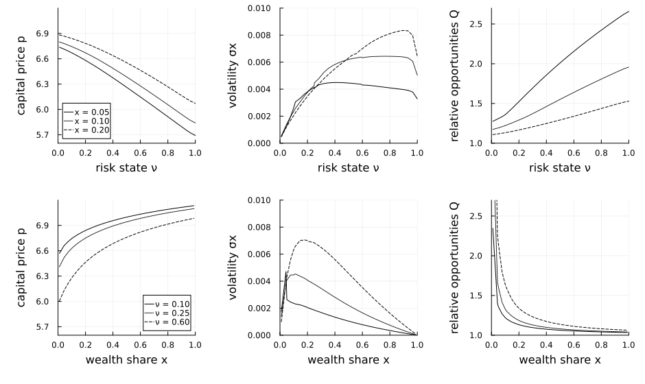

Di Tella (2017): uncertainty shocks and balance-sheet recessions
A two-state general-equilibrium model with a financial sector. Experts and households have recursive preferences and an agency friction (moral hazard) forces experts to bear idiosyncratic risk. There are two states: the experts' wealth share $x$ and a stochastic idiosyncratic risk state $\nu$ — the uncertainty shock. Three functions are solved jointly: transformed value/consumption objects $p_A, p_B$ for experts and households, and the capital price $p$, which is pinned down by an algebraic market-clearing constraint (is_algebraic) rather than by its own time derivative.
The model
The parameters:
using EconPDEs, Plots, Printf
Base.@kwdef struct DiTellaModel
# Utility Function
γ::Float64 = 5.0 # relative risk aversion
ψ::Float64 = 2.0 # elasticity of intertemporal substitution
ρ::Float64 = 0.0665 # rate of time preference (discount rate)
τ::Float64 = 1.15 # transition rate between experts and households
# Technology
A::Float64 = 54.0 # investment adjustment-cost parameter calibrated to the paper targets
δ::Float64 = 0.05 # depreciation rate in the investment technology
B::Float64 = (0.20 - A * (0.02 + δ)^2) / (0.02 + δ) # matches i(0.02) = 0.20
σ::Float64 = 0.0125 # aggregate (fundamental) volatility of capital
# MoralHazard
ϕ::Float64 = 0.2 # moral-hazard idiosyncratic-risk retention parameter
# Idiosyncratic
νbar::Float64 = 0.25 # long-run mean of idiosyncratic risk state ν
κν::Float64 = 1.38 # mean-reversion speed of ν (uncertainty process)
σνbar::Float64 = -0.17 # volatility loading of the ν process
endMain.DiTellaModelThe state space
We build the grid and the initial guess first, because they fix the names used everywhere else. The grid is a NamedTuple whose keys are the two state variables (x, the experts' wealth share, and ν, the idiosyncratic risk state); the guess is a NamedTuple whose keys are the unknown functions (pA, pB, p), holding one starting value at each grid point. The transformed objects pA and pB are convenient because 1 / pA and 1 / pB are the two agents' consumption rates, and Di Tella's relative investment opportunity measure is $Q = (p_A/p_B)^{1/(\psi-1)}$. These names are what reappear inside the equation below — e.g. pAx_up will be the forward finite difference of pA in x.
Two helpers build a grid over $(x, \nu)$ and a flat guess. The $\nu$ range matches the horizontal range in Di Tella's Figure 1, and the grid explicitly includes the slices shown there: $x=0.05,0.10,0.20$ and $\nu=0.10,0.25,0.60$. The parameter values below use the paper's reported calibration. The investment technology is $i(g)=A(g+\delta)^2+B(g+\delta)$ with $\delta=0.05$. The default $A$ and implied $B$ make the solved benchmark point near $x=0.10,\nu=0.25$ reproduce the paper's growth/investment targets, $g \simeq 0.02$ and $i \simeq 0.20$.
function initialize_stategrid(m::DiTellaModel; xn = 30, νn = 30)
xs = sort(unique(vcat(collect(range(0.01, 0.99, length = xn)), [0.05, 0.10, 0.20])))
νs = sort(unique(vcat(collect(range(0.01, 1.00, length = νn)), [0.10, 0.25, 0.60])))
(; x = xs, ν = νs)
end
function initialize_y(m::DiTellaModel, stategrid)
xn = length(stategrid[:x])
νn = length(stategrid[:ν])
(; pA = 20 * ones(xn, νn), pB = 20 * ones(xn, νn), p = 20 * ones(xn, νn))
end
m = DiTellaModel()
stategrid = initialize_stategrid(m)
guess = initialize_y(m, stategrid)(pA = [20.0 20.0 … 20.0 20.0; 20.0 20.0 … 20.0 20.0; … ; 20.0 20.0 … 20.0 20.0; 20.0 20.0 … 20.0 20.0], pB = [20.0 20.0 … 20.0 20.0; 20.0 20.0 … 20.0 20.0; … ; 20.0 20.0 … 20.0 20.0; 20.0 20.0 … 20.0 20.0], p = [20.0 20.0 … 20.0 20.0; 20.0 20.0 … 20.0 20.0; … ; 20.0 20.0 … 20.0 20.0; 20.0 20.0 … 20.0 20.0])The equation
We now write the function encoding the equilibrium conditions. Following the package convention, it takes the current state (a grid point) and u — the local bundle holding each unknown and its finite-difference derivatives there — and returns the time derivative of each unknown (pAt, pBt, pt).
With two states, both first derivatives and the cross derivative are upwinded — the first derivatives on the sign of their drifts, the cross term on the sign of the $x$–$\nu$ covariance.
function (m::DiTellaModel)(state::NamedTuple, u::NamedTuple)
(; γ, ψ, ρ, τ, A, δ, B, σ, ϕ, νbar, κν, σνbar) = m
(; x, ν) = state
(; pA, pAx_up, pAx_down, pAν_up, pAν_down, pAxx, pAxν_up, pAxν_down, pAνν, pB, pBx_up, pBx_down, pBν_up, pBν_down, pBxx, pBxν_up, pBxν_down, pBνν, p, px_up, px_down, pν_up, pν_down, pxx, pxν_up, pxν_down, pνν) = u
# drift and volatility of state variable ν
q = (p - B) / (2 * A)
g = q - δ
i = A * q^2 + B * q
μν = κν * (νbar - ν)
σν = σνbar * sqrt(ν)
pAν = (μν >= 0) ? pAν_up : pAν_down
pBν = (μν >= 0) ? pBν_up : pBν_down
pν = (μν >= 0) ? pν_up : pν_down
pAx, pBx, px = pAx_up, pBx_up, px_up
iter = 0
@label start
σX = x * (1 - x) * (1 - γ) / (γ * (ψ - 1)) * (pAν / pA - pBν / pB) * σν / (1 - x * (1 - x) * (1 - γ) / (γ * (ψ - 1)) * (pAx / pA - pBx / pB))
σpA = pAx / pA * σX + pAν / pA * σν
σpB = pBx / pB * σX + pBν / pB * σν
σp = px / p * σX + pν / p * σν
κ = (σp + σ - (1 - γ) / (γ * (ψ - 1)) * (x * σpA + (1 - x) * σpB)) / (1 / γ)
# κidio is the price of idiosyncratic risk (distinct from the parameter κν, the mean-reversion speed of ν).
κidio = γ * ϕ * ν / x
σA = κ / γ + (1 - γ) / (γ * (ψ - 1)) * σpA
νA = κidio / γ
σB = κ / γ + (1 - γ) / (γ * (ψ - 1)) * σpB
# Interest rate r
μX = x * (1 - x) * ((σA * κ + νA * κidio - 1 / pA - τ) - (σB * κ - 1 / pB + τ * x / (1 - x)) - (σA - σB) * (σ + σp))
# upwinding
if (iter == 0) && (μX <= 0)
iter += 1
pAx, pBx, px = pAx_down, pBx_down, px_down
@goto start
end
# upwind the cross derivative on the sign of its coefficient σX * σν (the x-ν covariance)
pAxν = (σX * σν >= 0) ? pAxν_up : pAxν_down
pBxν = (σX * σν >= 0) ? pBxν_up : pBxν_down
pxν = (σX * σν >= 0) ? pxν_up : pxν_down
μpA = pAx / pA * μX + pAν / pA * μν + 0.5 * pAxx / pA * σX^2 + 0.5 * pAνν / pA * σν^2 + pAxν / pA * σX * σν
μpB = pBx / pB * μX + pBν / pB * μν + 0.5 * pBxx / pB * σX^2 + 0.5 * pBνν / pB * σν^2 + pBxν / pB * σX * σν
μp = px / p * μX + pν / p * μν + 0.5 * pxx / p * σX^2 + 0.5 * pνν / p * σν^2 + pxν / p * σX * σν
r = (1 - i) / p + g + μp + σ * σp - κ * (σ + σp) - γ / x * (ϕ * ν)^2
# Market Pricing
pAt = - pA * (1 / pA + (ψ - 1) * τ / (1 - γ) * ((pA / pB)^((1 - γ) / (1 - ψ)) - 1) - ψ * ρ + (ψ - 1) * (r + κ * σA + κidio * νA) + μpA - (ψ - 1) * γ / 2 * (σA^2 + νA^2) + (2 - ψ - γ) / (2 * (ψ - 1)) * σpA^2 + (1 - γ) * σpA * σA)
pBt = - pB * (1 / pB - ψ * ρ + (ψ - 1) * (r + κ * σB) + μpB - (ψ - 1) * γ / 2 * σB^2 + (2 - ψ - γ) / (2 * (ψ - 1)) * σpB^2 + (1 - γ) * σpB * σB)
# algebraic constraint
pt = - p * ((1 - i) / p - x / pA - (1 - x) / pB)
Q = (pA / pB)^(1 / (ψ - 1))
return (; pAt, pBt, pt), (; σx = σX, Q, r, κ, σp, growth = g, investment = i)
endp enters as an algebraic (constraint) variable, and a small time step Δ is used:
# Δ is a hand-tuned, smaller initial pseudo-time step for this stiff 3-unknown system; shrink it further if the default diverges.
result = pdesolve(m, stategrid, guess; is_algebraic = (; pA = false, pB = false, p = true), Δ = 1e-2)EconPDEResult
zero: pA (33×33), pB (33×33), p (33×33)
saved: pA, pB, p, σx, Q, r, κ, σp, growth, investment
residual_norm: 1.82e-12
converged: true (tolerance 1.49e-08)The solution
We reproduce the three panels in Di Tella's Figure 1: the capital price $p$, the volatility of experts' wealth share $\sigma_x$, and relative investment opportunities $Q$. Each object is plotted both as a function of uncertainty $\nu$ at fixed balance sheets and as a function of experts' wealth share $x$ at fixed uncertainty. The key Di Tella mechanism is that an uncertainty shock raises the idiosyncratic risk experts must retain. When experts' balance sheets are weak (low $x$), their risk-bearing capacity is low, so the same increase in $\nu$ produces a larger fall in the capital price and a larger balance-sheet response.
xs = stategrid[:x]
νs = stategrid[:ν]
p = result.zero[:p]
σx = result.saved[:σx]
Q = result.saved[:Q]
growth = result.saved[:growth]
investment = result.saved[:investment]
mid_x = cld(length(xs), 2)
low_x = 1
high_x = length(xs)
benchmark_x = findfirst(==(0.10), xs)
benchmark_ν = findfirst(==(0.25), νs)
@printf("Technology calibration: A = %.1f, B = %.4f, δ = %.2f\n", m.A, m.B, m.δ)
@printf("At x = %.2f and ν = %.2f, g = %.3f and i = %.3f\n",
xs[benchmark_x], νs[benchmark_ν], growth[benchmark_x, benchmark_ν],
investment[benchmark_x, benchmark_ν])
@printf("At median x = %.2f, capital price falls from %.2f at low ν to %.2f at high ν\n",
xs[mid_x], p[mid_x, 1], p[mid_x, end])
@printf("The low-to-high ν price drop is %.1f%% at x = %.2f and %.1f%% at x = %.2f\n",
100 * (p[low_x, 1] - p[low_x, end]) / p[low_x, 1], xs[low_x],
100 * (p[high_x, 1] - p[high_x, end]) / p[high_x, 1], xs[high_x])
line_styles = [:solid, :dot, :dash]
x_slices = [0.05, 0.10, 0.20]
ν_slices = [0.10, 0.25, 0.60]
pν = plot(; xlabel = "risk state ν", ylabel = "capital price p",
xlims = (0, 1), ylims = (5.6, 7.2), legend = :bottomleft)
σxν = plot(; xlabel = "risk state ν", ylabel = "volatility σx",
xlims = (0, 1), ylims = (0, 0.01), legend = false)
Qν = plot(; xlabel = "risk state ν", ylabel = "relative opportunities Q",
xlims = (0, 1), ylims = (1.0, 2.7), legend = false)
for (x_slice, line_style) in zip(x_slices, line_styles)
x_index = findfirst(==(x_slice), xs)
plot!(pν, νs, p[x_index, :]; label = @sprintf("x = %.2f", x_slice),
color = :black, linestyle = line_style)
plot!(σxν, νs, σx[x_index, :]; color = :black, linestyle = line_style)
plot!(Qν, νs, Q[x_index, :]; color = :black, linestyle = line_style)
end
px = plot(; xlabel = "wealth share x", ylabel = "capital price p",
xlims = (0, 1), ylims = (5.6, 7.2), legend = :bottomright)
σxx = plot(; xlabel = "wealth share x", ylabel = "volatility σx",
xlims = (0, 1), ylims = (0, 0.01), legend = false)
Qx = plot(; xlabel = "wealth share x", ylabel = "relative opportunities Q",
xlims = (0, 1), ylims = (1.0, 2.7), legend = false)
for (ν_slice, line_style) in zip(ν_slices, line_styles)
ν_index = findfirst(==(ν_slice), νs)
plot!(px, xs, p[:, ν_index]; label = @sprintf("ν = %.2f", ν_slice),
color = :black, linestyle = line_style)
plot!(σxx, xs, σx[:, ν_index]; color = :black, linestyle = line_style)
plot!(Qx, xs, Q[:, ν_index]; color = :black, linestyle = line_style)
end
plot(pν, σxν, Qν, px, σxx, Qx; layout = (2, 3), size = (940, 560),
left_margin = 8Plots.mm, bottom_margin = 8Plots.mm, right_margin = 4Plots.mm)
This page was generated using Literate.jl.